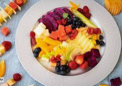

Recetas Saludables
Ensalada de Quinoa
Ingredientes:
- 1 taza de quinoa cocida
- Tomate cherry
- Pepino
- Aceitunas
- Queso feta
- Aceite de oliva
- Jugo de limón
- Sal y pimienta al gusto
Instrucciones:
- En un tazón, combina la quinoa cocida, los tomates cherry cortados por la mitad, el pepino en rodajas, las aceitunas y el queso feta desmenuzado.
- En otro recipiente, mezcla el aceite de oliva, el jugo de limón, la sal y la pimienta.
- Vierte la mezcla de aderezo sobre la ensalada y mezcla bien.
- Sirve y disfruta.
Salmón a la Parrilla
Ingredientes:
- Filete de salmón
- Limón
- Sal y pimienta al gusto
- Eneldo fresco
- Aceite de oliva
Instrucciones:
- Prende la parrilla a fuego medio-alto.
- Salpimienta el filete de salmón y rocía con jugo de limón.
- Cocina el salmón en la parrilla durante 4-6 minutos por cada lado, dependiendo del grosor del filete.
- Retira el salmón de la parrilla y espolvorea con eneldo fresco.
- Sirve caliente y disfruta.
Ensalada de Frutas
Ingredientes:
- Manzanas
- Naranjas
- Piña
- Uvas
- Melón
- Menta fresca
- Jugo de limón
- Miel
Instrucciones:
- Pela y corta todas las frutas en trozos.
- En un tazón grande, mezcla las frutas cortadas.
- Exprime el jugo de limón sobre la ensalada de frutas y agrega un poco de miel al gusto.
- Decora con hojas de menta fresca.
- Refrigera durante al menos 1 hora antes de servir.
Batido de Espinacas y Plátano
Ingredientes:
- Espinacas frescas
- Plátano maduro
- Leche de almendras
- Yogur griego
- Miel
Instrucciones:
- En una licuadora, combina las espinacas frescas, el plátano en trozos, la leche de almendras, el yogur griego y la miel.
- Mezcla hasta obtener una consistencia suave y homogénea.
- Sirve en un vaso y disfruta como un batido saludable.